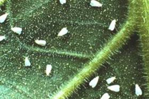
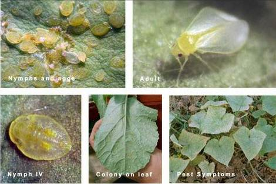

| Home |
| COTTON |
| 1. Leafhopper |
| 2. Cotton Aphid |
| 3. Thrips |
| 4. Whitefly |
| 5. Mealy Bug |
| 6. Red Cotton Bug |
| 7. Dusky Cotton Bug |
| 8. Tobacco Cutworm |
| 9. Leaf Roller |
| 10. Semiloopers |
| 11. Stem Weevil |
| 12. Shoot Weevil |
| 13. Surface Weevil |
| 14. Black Scale |
| 15. White Scale |
| 16. Yellow Stem Scale |
| Questions |
| Download Notes |
PESTS OF COTTON :: Major Pests :: Whitefly
4. Whitefly: Bemisia tabaci (Aleyrodidae: Hemiptera)
Distribution and status: India, Sri Lanka, Nigeria, Congo, West Africa, Japan and Europe
Host range: Cotton, tomato, tobacco, sweet potato, cassava, cabbage, cauliflower, melon, brinjal and bhendi.
Damage symptoms: Nymphs and adults suck the sap from the under surface of leaves. Severe infestation results in premature defoliation, development of sooty mould, shedding of buds and bolls and poor boll opening. It also transmits the leaf curl virus disease of cotton. The insect is highly polyphagous and known to have biotypes.
 |
ETL: 5-10 nymphs / leaf
Bionomics: Adult is a minute insect with yellow body covered with a white waxy bloom. Eggs are laid on leaves. Egg period is three days. Nymph is greenish yellow oval in outline, along with puparia on the under surface of the leaves. Nymphal period is 5-33 days in summer, 17-73 days in winter.
 |
Management
- Use white fly tolerant varieties like LK 861, Amravathi, Kanchan, Supriya, LPS 141
- Treat 100 kg seeds with Imidacloprid 48 FS 500-900 ml or Imidacloprid 70 WS 500-1000 g Thiamethoxam 30 FS 1.0 L l or Thiamethoxam 70 WS 430 g
- Timely sowing with recommended spacing, preferably wider spacing is essential, avoid late sowing.
- Avoid the alternative cultivated host crops of the whitefly (Brinjal, bhendi, tomato and tobacco) in the vicinity of the cotton crop.
- Grow cotton only once in a year either in winter or summer season in any cotton tract.
- Adopt crop rotation with non-preferred hosts such as sorghum, ragi, maize etc., to check the build up of the pest.
- Remove and destroy alternate weed hosts like Abutilon indicum, Solanum nigrum from the fields and neighbouring areas.
- Follow judicious irrigation management and nitrogenous fertilizer application to arrest the excessive vegetative growth and pest the buildup.
- Monitor the activities of the adult whiteflies by setting up yellow pan traps and sticky traps at 1 foot height. Also monitor through in situ counts
- Collect and remove whitefly infested leaves from the plants and those which were shed due to the attack of the pest and destroy them.
- Spray NSKE 5% and neem oil 5 ml or fish oil rosin soap at 1 kg / 40 L of water (or) in combination with recommended dose of insecticide (2 ml/L).
- The use of the synthetic pyrethroids should be discouraged / minimized to 2-3 sprays in cotton to avoid the problem of whitefly.
- Avoid repeated spraying of synthetic pyrethroids.
|
|
|
|
|
|
|
|
|
|
|
|
|
|
|
|
|
|
|
|